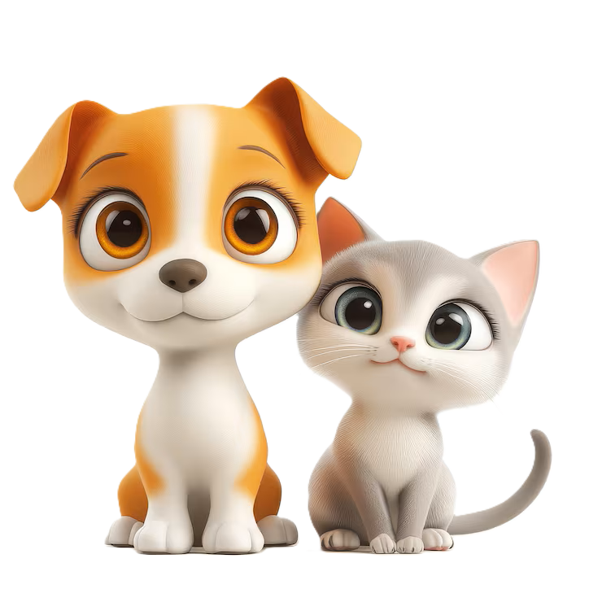

Nossa Missão
Conectando corações e transformando vidas de animais abandonados.

Quem Somos
O AuDoção nasceu da necessidade de centralizar a busca por pets em nossa cidade. Somos uma plataforma que facilita o encontro entre ONGs sérias e adotantes responsáveis.
Como estudantes de tecnologia, acreditamos que o código pode ser uma ferramenta poderosa para esvaziar abrigos e preencher lares com amor.